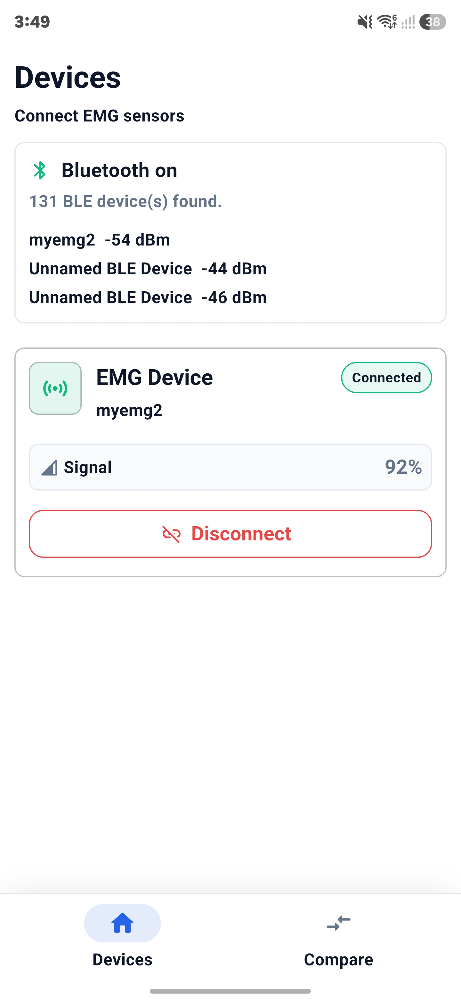
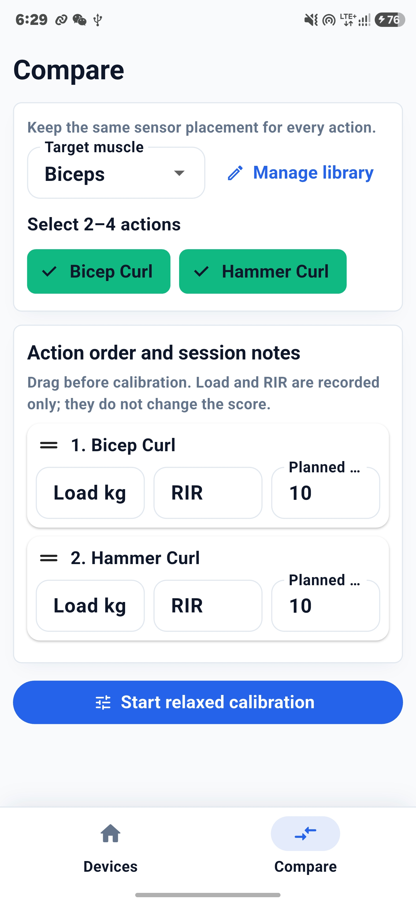
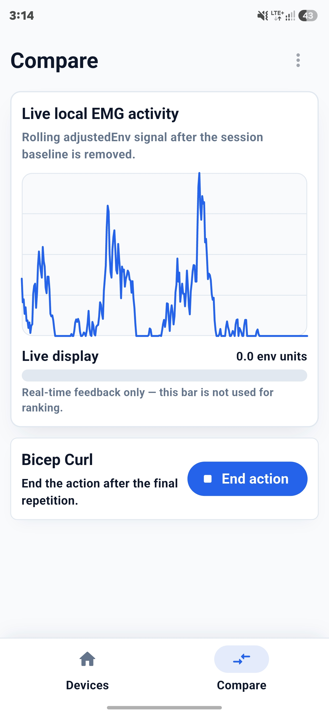
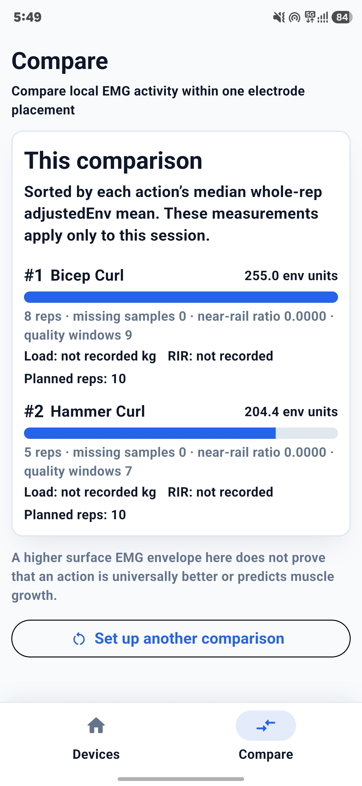
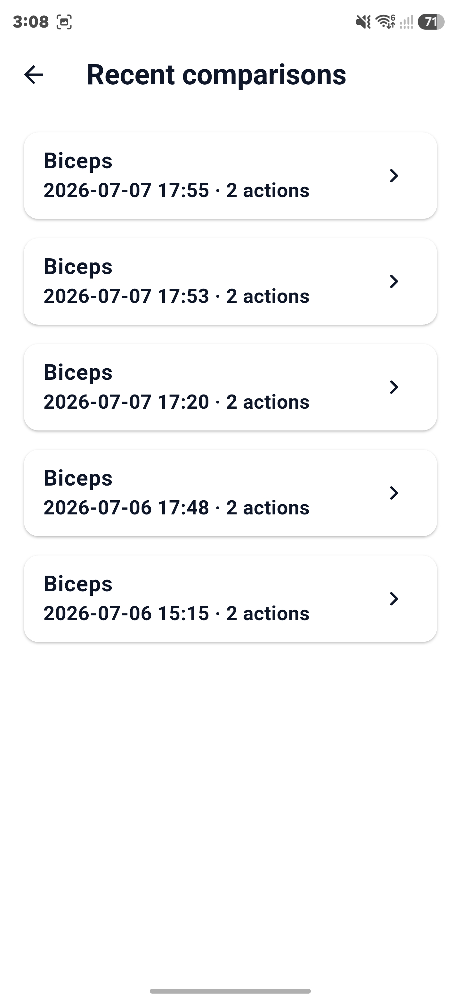
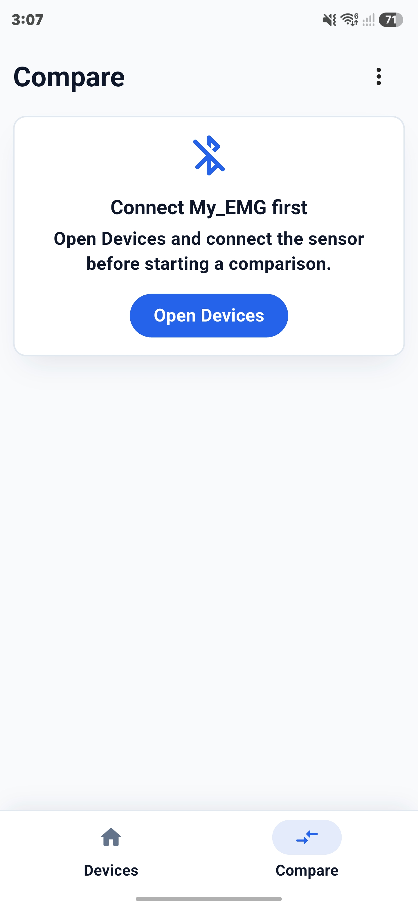

Connect the sensor
Scan nearby BLE devices and connect My_EMG. Signal strength confirms the link before the session starts.
MyEMG records local surface EMG activity while you test multiple exercises without changing electrode placement. One relaxed calibration keeps every action in the session on the same local reference.
Recording: Bicep Curl
Real-time feedback only — not used for ranking.
Surface EMG amplitude changes with electrode placement, calibration and signal quality. MyEMG keeps comparisons inside one uninterrupted session.
Choose a target muscle and 2–4 actions, complete one relaxed calibration, then record each action without moving the electrodes. Results use the median of valid repetition-level adjusted-envelope means and apply only to that session.
MyEMG is a dissertation prototype for controlled exercise comparison, not a medical device or training prescription tool.
Real screens from the app, in the order you use them: connect the sensor, set up 2–4 actions, record with live feedback, then review and revisit results.

Scan nearby BLE devices and connect My_EMG. Signal strength confirms the link before the session starts.

Pick a target muscle and 2–4 actions, set their order and optionally note load, RIR and planned reps — recorded only, never scored.

After one relaxed calibration, follow the live adjusted-envelope curve and end each action after the final repetition.

Valid actions are ranked by their median whole-rep adjusted-envelope mean, with rep counts and signal-quality details for this session only.

The latest 8 completed comparisons stay on the phone as read-only history. Aborted sessions are never saved.

Compare will not start without a live connection. If My_EMG is not connected, the app points back to Devices before a comparison can begin.
Compare actions only while electrode placement and calibration remain unchanged.
Follow the adjusted-envelope curve and bar without treating either as the final score.
Establish one local baseline that is reused throughout the comparison.
Review detected repetitions, correct the count or discard and retest before confirming an action.
Reject action windows affected by packet loss, clipping or insufficient quality data. Heavy sets that hit the sensor limit are invalidated.
Keep the latest 8 completed sessions locally as read-only history. Aborted sessions are not saved.
The wearable prototype combines a Cheez.sEMG sensor, XIAO ESP32C3 board, battery power and a 3D-printed case designed to be attached to the arm.
Tap or swipe to switch
Sensor placement, relaxed calibration, live envelope feedback and a within-session comparison.
A local BLE prototype and Flutter app, built to compare exercises within one unchanged electrode-placement session.
Cheez.sEMG sensor, XIAO ESP32C3, battery-powered wearable prototype and 3D-printed case.
Arduino C++, 500 Hz ADC sampling, envelope processing, rest calibration gates and BLE v2 JSON sample, quality and calibration packets.
Flutter, Dart, rep segmentation and review, quality gating, within-session comparison, plus a local catalog and comparison history stored with SharedPreferences.